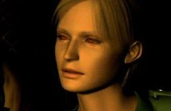

Jugabilidad (Gameplay)
Silent Hill es un videojuego de terror de supervivencia en tercera persona con entornos tridimensionales en tiempo real. Para ocultar las limitaciones del hardware de la consola, los desarrolladores utilizaron de forma masiva la niebla y la oscuridad, elementos que terminaron convirtiéndose en la identidad atmosférica de la saga.

El sistema de juego se sostiene sobre tres pilares fundamentales que diferencian a esta obra de otros títulos contemporáneos del género:
1. Exploración y Combate
A diferencia de los protagonistas de acción tradicionales, el personaje principal es un hombre común sin entrenamiento militar. Esto se refleja en su puntería inestable y en su fatiga al correr largas distancias. El jugador dispone de un arsenal limitado que incluye armas cuerpo a cuerpo (como un cuchillo o una tubería de acero) y armas de fuego cortas.
2. Herramientas de Supervivencia
Dos objetos definen la experiencia mecánica de juego:
- La Radio: Emite estática con mayor intensidad a medida que las criaturas monstruosas se aproximan, funcionando como un sistema de alerta temprana en entornos de nula visibilidad.
- La Linterna: Permite iluminar el camino en la oscuridad absoluta del Otro Mundo, pero su luz también atrae la atención de los enemigos cercanos.
3. Acertijos y El Mapa
La progresión requiere resolver complejos acertijos integrados en el entorno. El mapa de la ciudad es indispensable para orientarse; sin embargo, el protagonista irá tachando calles bloqueadas, callejones sin salida y puertas cerradas con un marcador a tiempo real a medida que explora, obligando al jugador a buscar rutas alternativas.